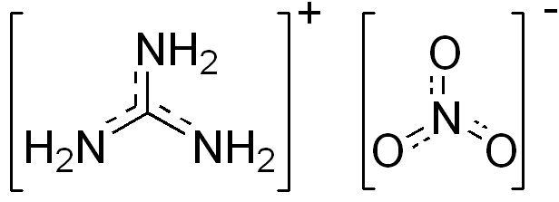

Chapter 11 Applied thermochemistry: Oxido-Reduction equilibria
This chapter is still under construction
Chapter summary:
- A reducing agent, or reductant, is a molecule which can donate an electron e- and an oxidizing agent, or oxidant, base is an element that can accept an e-
11.0.1 Some outside the box redox reactions
11.0.1.1 Guanidinium nitrate reaction to inflate air bags
Guanidinium nitrate , commonly called guanidine nitrate, is a crystal that contains together potential electron donors in the form of fully reduced nitrogen on the guanidinium cation and fully oxidized nitrogen on the nitrate anion side. This crystal is used in air bags of vehicles as it is rather stable, only needs a spark to explode, and has a relatively low temperature of reaction. Let us explore this reaction. First, the hint that it is used to rapidly blow air bags tells us that gas(es) must be produced. Because the nitrogen atoms of the guanidinium side have 8 electrons to give, and nitrate ions have none and can gain some, the end gas product that contains nitrogen must have a number of electrons somewhat between the two. The first guess is \(N_2\) as each atom has 5 electrons for itself. So the two redox couples at play must be \(NO_3^-/N_2\) and \(N_2/C(NH_2)_3^+\).
Figure 11.1: Ball and stick structure of guanidinium nitrate sometimes used as a fuel for airbag inflation
However, on one guanidinium, there are three nitrogen atoms fully reduced for a combined 24 electrons to give (8 e- on each of the N atom), although when oxidized into \(N_2\) (5 e- on each of the N atom), each atom would lose 3 electrons for a combined 9 electrons lost. Nitrate reduction into \(N_2\) involves accepting 5 electrons. So there is an imbalance of 4 electrons in the electron transfer from nitrogen atoms of guanidinium to the one nitrogen of nitrate… The only solution is for the carbon of guanidinium, which has no electron for itself, to accept these 4 electrons. But then, how can carbon atoms be floating around on their own…? The octet rule must be fulfilled in all cases… Carbon atoms can actually form direct bonds with themselves as solid carbon, written as \(C_{(s)}\), and therefore accept 4 electrons. If dioxygen is present, then the formation of solid carbon usually does not happen as dioxygen steals these electrons first. But in the case of an airbag cartridge, there is very little space for dioxygen, the formation of \(C_{(s)}\) can occur.
Now, one can balance the two half reactions involved. Nitrate being the most oxidizing agent, the first redox couple is considered. Its first reaction can be written as:
\[\begin{equation} 2NO_3^- + 12 H^+ + 10 e^- \rightleftharpoons N_2 + 6H_2O \tag{11.1} \end{equation}\]
The dinitrogen/guanidinium redox couple is quite interesting as it involves another redox reactive atom: carbon. In these cases, the general approach is to leave the atoms as they are, provided that there is a possibility for the octet rule of the reactants/products to be fulfilled. Here, the solution is solid carbon \(C_{(s)}\). Hence the half redox equation for this couple:
\[\begin{equation} 3N_2 + 2C_{(s)} + 12 H^+ + 10 e^- \rightleftharpoons 2C(NH_2)_3^+ \tag{11.2} \end{equation}\]
On both half-reactions (11.1) and (11.2), the same number of electrons (10) are transferred and can be directly combined to obtain the final reaction (11.3).
\[\begin{gather*} 2NO_3^- + 12 H^+ + 10 e^- \rightleftharpoons N_2 + 6H_2O \\ 3N_2 + 2C_{(s)} + 12 H^+ + 10 e^- \rightleftharpoons 2C(NH_2)_3^+ \\ \hline C(NH_2)_3^+ \space NO_3^- \rightleftharpoons 2N_2 + 3H_2O + C_{(s)} \tag{11.3} \end{gather*}\]
The decomposition of one mole of solid guanidinium nitrate, upon an activation energy provided by a spark, produces into 5 moles of gas (2 moles of dinitrogen and 3 moles of water), and one mole of solid carbon. Because the electron donors and acceptors are closely packed together, the reaction is not limited by the transport of an electron acceptor near the donor (as is the case for burning wood for example), this reaction is fast. An instantaneous reaction that produce 5 moles of gas from a mole of solid compound has an explosive effect, hence its use in air bag deployment.
Now, one might ask: why is it that the only hypothetical gas produced should be \(N_2\) and not \(N_2O\) for example? After all, in nitrous oxide \(N\equiv N-O\), the middle oxygen has 3 electrons for itself and the other one 5, for an average of 4, which is closer to the midpoint between the amine groups (each N contains 8) and the nitrate (0 electrons on N). Let us thus explore the \(NO_3^-/N_2O\) and \(N_2O/C(NH_2)_3^+\) redox couples and the resulting reaction.
The half-reaction of the most oxidizing redox couple \(NO_3^-/N_2O\) can be written as:
\[\begin{equation} 2NO_3^- + 10 H^+ + 8 e^- \rightleftharpoons N_2O + 5H_2O \tag{11.4} \end{equation}\]
And the half-reaction of the more reducing \(N_2O/C(NH_2)_3^+\) can be written as:
\[\begin{equation} 3N_2O + 2C_{(s)} + 18 H^+ + 16 e^- \rightleftharpoons 2C(NH_2)_3^+ + 3H_2O \tag{11.5} \end{equation}\]
Half-reaction (11.4) needs to be multiplied by a factor of 2 to have the same number of electrons transferred (16). The resulting oxidation of guanidinium nitrate leading to the formation of nitrous oxide can be written as in (11.6).
\[\begin{gather*} 4NO_3^- + 20 H^+ + 16 e^- \rightleftharpoons N_2O + 10H_2O \\ 3N_2O + 2C_{(s)} + 18 H^+ + 16 e^- \rightleftharpoons 2C(NH_2)_3^+ + 3H_2O \\ \hline 2C(NH_2)_3^+ + 4NO_3^- +2H^+ \rightleftharpoons 5N_2O + 2C_{(s)} + 7H_2O \tag{11.6} \end{gather*}\]
Clearly this reaction is possible in theory. However, in practice it probably does not happen because 1) it requires the presence of protons, which would not be there in the guanidinium nitrate crystals, and 2) it would require twice as many nitrate as many guanidinium, and here too, this stochiometry is not that of the guanidinium nitrate salt. So this reaction is probably not happening when airbags are set on.
11.0.1.2 Chemolithotrophic denitrification on pyrite
Pyrite (\(FeS_2\)) is an interesting mineral and illustrates quite well the difference between covalent bonds and an ionic bond. In the case of covalent bonds, electrons are shared between non-metal ions, in ionic bonds, one metal and a non-metal atom exchange electrons. In ionic bonds, we cannot use the electronegativity concept any longer to allocate electrons. So, although Sulfur atom is more electronegative (2.58) than iron (1.83), Sulfur does not steal electrons from iron. So the ions involved in pyrite are \(Fe^{2+}(S^-)_2\). Iron is thus in its most reduced form, for an oxidation state (OS) of (+II) corresponding to its charge referred to as ferrous iron or iron (II), and sulfur is also reduced in the form of \(S^-\), having 7 electrons for itself for an oxidation state of (-I). The summation of the OS is +II -I -I = 0, corresponding to the zero charge of the overall crystal.
Because the sulfur has 7 electron for itself, it can be oxidized, obviously by dioxygen, but interestingly for biogeochemical purposes, by nitrate as well. The full oxidation of sulfur, i.e., the loss of all 7 electrons, leads to the formation of sulfate. The reduction of nitrate generally leads to the formation of dinitrogen although the reduction all the way to ammonium is possible in the reaction called Dissimilatory Reduction of Nitrate into Ammonium (DNRA). In nature, it seems that the reduction of nitrate stops at the \(N_2\) stage.
From all this information, it is possible to draw the two redox couple involved. The more oxidative couple is \(NO_3^-/N_2\) and the one that involves pyrite oxidation into sulfate is \(SO_4^{2-}/FeS_2\).
The nitrate reduction into dinitrogen is half-reaction (11.1),
\[\begin{equation} 2NO_3^- + 12 H^+ + 10 e^- \rightleftharpoons N_2 + 6H_2O \tag{11.1} \end{equation}\]
and the pyrite oxidation:
\[\begin{equation} 2SO_4^{2-} + Fe^{2+} + 16 H^+ + 14 e^- \rightleftharpoons FeS_2 + 8 H_2O \tag{11.7} \end{equation}\]
The overall reduction of nitrate by pyrite is summarized in reaction (11.8) by multiplying the first half-reaction (11.1) by a factor of 7 and the second (11.7) by a factor of 5 to balance the electrons transferred.
\[\begin{gather*} 14NO_3^- + 84 H^+ + 70 e^- \rightleftharpoons 7N_2 + 42H_2O \\ 10SO_4^{2-} + 5Fe^{2+} + 80 H^+ + 70 e^- \rightleftharpoons 5FeS_2 + 40 H_2O \\ \hline 5FeS_2 + 14NO_3^- + 4H^+ \rightleftharpoons 10SO_4^{2-} + 5Fe^{2+} + 7N_2 + 2H_2O \tag{11.8} \end{gather*}\]
Now, there is another twist to chemolithotrophic denitrification using pyrite as the primary electron acceptor. Several studies surmised that nitrate could be further denitrified by the produced \(Fe^{2+}\) of pyrite oxidation (Kölle, Strebel, and Böttcher 1983, 1985, 1990; Pauwels 1994, 1994; Somlette 1999). But it was not until 1996, that actual evidence of Nitrate-Dependent Fe-Oxidation (NDFO) or Nitrate Reducing Fe Oxidation (NRFeOx, Straub et al. (1996)) microbial activity was brought forth. In other words, people have found that there were bacteria able to use ferrous Fe (II) as an electron donor, and nitrate as the electron acceptor. This has later been confirmed in many different environments including lake sediments, in pyrite containing schist, sandy and gravelly sediments, etc. (Straub et al. 1996, 2004; Straub and Buchholz-Cleven 1998; Lack et al. 2002; A. Kappler and Straub 2005; A. Kappler, Schink, and Newman 2005; Weber, Achenbach, and Coates 2006; Muehe et al. 2009; Blöthe and Roden 2009; Chakraborty et al. 2011; Chakraborty and Picardal 2013; Melton et al. 2014; Liu et al. 2019; reviewed by Bryce et al. 2018) (Figure 11.2).
![I. Chemolithotrophic bacteria *Thiobacillus denitrificans* used pyrite (FeS~2~) as electron donor, and nitrate as electron acceptor, reducing them to N~2~ and N~2~O. II. The ferrous iron Fe^2+^ produced is then used by other microorganisms that use Fe^2+^ as electron donors and nitrate, again as electron acceptor. These are called Nitrate Reducing Fe Oxidazing organisms. Some are autotrophs, mixotrophs (need both organic carbon and Fe^2+^ to live), or chemodenitrifiers (require organic carbon and have no enzymatic component of Fe(II) oxidation). After [@Bryce2018-cb]](pictures/pyrite-NRFeOx.png)
Figure 11.2: I. Chemolithotrophic bacteria Thiobacillus denitrificans used pyrite (FeS2) as electron donor, and nitrate as electron acceptor, reducing them to N2 and N2O. II. The ferrous iron Fe2+ produced is then used by other microorganisms that use Fe2+ as electron donors and nitrate, again as electron acceptor. These are called Nitrate Reducing Fe Oxidazing organisms. Some are autotrophs, mixotrophs (need both organic carbon and Fe2+ to live), or chemodenitrifiers (require organic carbon and have no enzymatic component of Fe(II) oxidation). After (Bryce et al. 2018)
As a result, reaction (11.8) actually continues as the produced ferrous Fe (II) can be further oxidized by nitrate. The most oxidizing couple is still \(NO_3^-/N_2\), and the most reducing is now \(Fe(OH)_3/Fe^{2+}\). One could choose \(Fe^{3+}\) instead of \(Fe(OH)_3\), but at groundwater pH and reduced conditions when nitrate is still present, Fe (III) is more stable as iron hydroxides (Hem 1985; Stumm and Morgan 1996; Fetter 2008; Torrentó et al. 2010; reviewed by Bryce et al. 2018). Other authors proposed that the goethite mineral (\(FeOOH\)) would be formed instead of \(Fe(OH)_3\) iron hydroxides (Kölle, Strebel, and Böttcher 1985, 1990; Cheng et al. 2020). Ottley et al. (1997) actually listed 12 other possible \(Fe^{2+}\) oxidation reactions by nitrate. The one described below appears to be considered as prevalent (reviewed by Bryce et al. 2018).
The half reaction for the \(Fe(OH)_3/Fe^{2+}\) can be written as:
\[\begin{equation} Fe(OH)_3 + 3 H^+ + 1 e^- \rightleftharpoons Fe_2^+ + 3H_2O \tag{11.9} \end{equation}\]
Combining both half-reactions (11.1) and (11.9) and multiplying each by the proper factor to exchange the same number of electrons yields:
\[\begin{gather*} 2NO_3^- + 12 H^+ + 10 e^- \rightleftharpoons N_2 + 6H_2O \\ 10Fe(OH)_3 + 30 H^+ + 10 e^- \rightleftharpoons 10Fe_2^+ + 30H_2O \\ \hline 5Fe^{2+} + NO_3^- + 12H_2O \rightleftharpoons 5Fe(OH)_3 + 9H^ + \frac{1}{2}N_2 \tag{11.10} \end{gather*}\]
Now, literally adding reactions (11.8) and (11.10) yields:
\[\begin{gather*} 5FeS_2 + 14NO_3^- + 4H^+ \rightleftharpoons 10SO_4^{2-} + 5Fe^{2+} + 7N_2 + 2H_2O \\ 5Fe^{2+} + NO_3^- + 12H_2O \rightleftharpoons 5Fe(OH)_3 + 9H^+ + \frac{1}{2}N_2 \\ \hline 5FeS_2 + 15NO_3^- + 10H_2O \rightleftharpoons 5Fe(OH)_3 + \frac{15}{2}N_2 + 10SO_4^{2-} + 5H^+ \tag{11.11} \end{gather*}\]

Figure 11.3: Concentrations of Sulfate and hydrogen sulfide as a function of pε

Figure 11.4: Concentrations of a generic carbohydrate CH2O and CO2 that would be in equilibrium with the atmosphere as a function of pε and for a given pH

Figure 11.5: Concentrations ammonium, nitrite, and nitrate as a function of pε and for a given pH
This chapter is still under construction
References
Blöthe, Marco, and Eric E Roden. 2009. “Composition and Activity of an Autotrophic Fe(II)-oxidizing, Nitrate-Reducing Enrichment Culture.” Appl. Environ. Microbiol. 75 (21). American Society for Microbiology: 6937–40. https://doi.org/10.1128/AEM.01742-09.
Bryce, Casey, Nia Blackwell, Caroline Schmidt, Julia Otte, Yu-Ming Huang, Sara Kleindienst, Elizabeth Tomaszewski, et al. 2018. “Microbial Anaerobic Fe(II) Oxidation - Ecology, Mechanisms and Environmental Implications.” Environ. Microbiol. 20 (10): 3462–83. https://doi.org/10.1111/1462-2920.14328.
Chakraborty, Anirban, and Flynn Picardal. 2013. “Induction of Nitrate-Dependent Fe(II) Oxidation by Fe(II) in Dechloromonas Sp. Strain UWNR4 and Acidovorax Sp. Strain 2AN.” Appl. Environ. Microbiol. 79 (2): 748–52. https://doi.org/10.1128/AEM.02709-12.
Chakraborty, Anirban, Eric E Roden, Jürgen Schieber, and Flynn Picardal. 2011. “Enhanced Growth of Acidovorax Sp. Strain 2AN During Nitrate-Dependent Fe(II) Oxidation in Batch and Continuous-Flow Systems.” Appl. Environ. Microbiol. 77 (24): 8548–56. https://doi.org/10.1128/AEM.06214-11.
Cheng, Boyi, Yi Wang, Yumei Hua, and Kate V Heal. 2020. “The Performance of Nitrate-Reducing Fe(II) Oxidation Processes Under Variable Initial Fe/N Ratios: The Fate of Nitrogen and Iron Species.” Front. Environ. Sci. Eng. China 15 (4): 73. https://doi.org/10.1007/s11783-020-1366-2.
Fetter, Charles Willard. 2008. Contaminant Hydrogeology. Waveland Press, Incorporated. https://play.google.com/store/books/details?id=7YxaPgAACAAJ.
Hem, J D. 1985. “Study and Interpretation of the Chemical Characteristics of Natural Water.” 2254. U.S. Geological Survey Water Supply Paper. USGS. https://pubs.usgs.gov/wsp/wsp2254/pdf/wsp2254a.pdf.
Kappler, A, B Schink, and D K Newman. 2005. “Fe(III) Mineral Formation and Cell Encrustation by the Nitrate-Dependent Fe(II)-oxidizer Strain BoFeN1.” Geobiology 3 (4). Wiley: 235–45. https://doi.org/10.1111/j.1472-4669.2006.00056.x.
Kappler, A, and K L Straub. 2005. “Geomicrobiological Cycling of Iron.” Rev. Mineral. Geochem. 59 (1). Mineralogical Society of America: 85–108. https://doi.org/10.2138/rmg.2005.59.5.
Kölle, W, O Strebel, and J Böttcher. 1983. “Denitrifikation in Einem Reduzierenden Grundwasserleiter.” Vom Wasser 61: 125–47.
Kölle, W, O Strebel, and J Böttcher. 1985. “Formation of Sulfate by Microbial Denitrification in a Reducing Aquifer.” Water Supply 3: 35–40.
Kölle, W, O Strebel, and J Böttcher. 1990. “Reduced Sulphur Compounds in Sandy Aquifers and Their Interactions with Groundwater.” IAHS 173: 23–30. https://iahs.info/uploads/dms/7306.23-30-173-Kolle.pdf.
Lack, J G, S K Chaudhuri, R Chakraborty, L A Achenbach, and J D Coates. 2002. “Anaerobic Biooxidation of Fe(II) by Dechlorosoma Suillum.” Microb. Ecol. 43 (4): 424–31. https://doi.org/10.1007/s00248-001-1061-1.
Liu, Tongxu, Dandan Chen, Xiaomin Li, and Fangbai Li. 2019. “Microbially Mediated Coupling of Nitrate Reduction and Fe(II) Oxidation Under Anoxic Conditions.” FEMS Microbiol. Ecol. 95 (4). https://doi.org/10.1093/femsec/fiz030.
Melton, E D, A Rudolph, S Behrens, C Schmidt, and A Kappler. 2014. “Influence of Nutrient Concentrations on MPN Quantification and Enrichment of Nitrate-Reducing Fe(II)-Oxidizing and Fe(III)-Reducing Bacteria from Littoral Freshwater Lake Sediments.” Geomicrobiol. J. 31 (9). Taylor & Francis: 788–801. https://doi.org/10.1080/01490451.2014.892765.
Muehe, Eva Marie, Simone Gerhardt, Bernhard Schink, and Andreas Kappler. 2009. “Ecophysiology and the Energetic Benefit of Mixotrophic Fe(II) Oxidation by Various Strains of Nitrate-Reducing Bacteria.” FEMS Microbiol. Ecol. 70 (3): 335–43. https://doi.org/10.1111/j.1574-6941.2009.00755.x.
Otlley, C J, W Davison, and W M Edmunds. 1997. “Chemical Catalysis of Nitrate Reduction by iron(II).” Geochim. Cosmochim. Acta 61 (9): 1819–28.
Pauwels, H. 1994. “Natural Denitrification in Groundwater in the Presence of Pyrite: Preliminary Results Obtained at Naizin (Brittany, France).” Mineralogical Magazine A 58: 696–97. https://eurekamag.com/research/019/496/019496851.php.
Somlette, Luc. 1999. “Contribution à L’étude Hydrogéologique de La Distribution et Du Devenir Des Nitrates Dans Les Nappes de Fissures, de L’échelle Du Périmétre Expérimental à Celle Du Bassin Versant côtier. Conséquences Sur Les Ressources En Eaux et La Protection Du Littoral En Bretagne.” PhD thesis, Université de Bretagne Occidentale, France.
Straub, K L, M Benz, B Schink, and F Widdel. 1996. “Anaerobic, Nitrate-Dependent Microbial Oxidation of Ferrous Iron.” Appl. Environ. Microbiol. 62 (4): 1458–60. https://doi.org/10.1128/aem.62.4.1458-1460.1996.
Straub, K L, and B E Buchholz-Cleven. 1998. “Enumeration and Detection of Anaerobic Ferrous Iron-Oxidizing, Nitrate-Reducing Bacteria from Diverse European Sediments.” Appl. Environ. Microbiol. 64 (12): 4846–56. https://doi.org/10.1128/AEM.64.12.4846-4856.1998.
Straub, Kristina L, Wilhelm A Schönhuber, Berit E E Buchholz-Cleven, and Bernhard Schink. 2004. “Diversity of Ferrous Iron-Oxidizing, Nitrate-Reducing Bacteria and Their Involvement in Oxygen-Independent Iron Cycling.” Geomicrobiol. J. 21 (6). Taylor & Francis: 371–78. https://doi.org/10.1080/01490450490485854.
Stumm, Werner, and James J Morgan. 1996. Aquatic Chemistry: Chemical Equilibria and Rates in Natural Waters. Wiley. https://market.android.com/details?id=book-xvZOAAAAMAAJ.
Torrentó, Clara, Jordi Cama, Jordi Urmeneta, Neus Otero, and Albert Soler. 2010. “Denitrification of Groundwater with Pyrite and Thiobacillus Denitrificans.” Chem. Geol. 278 (1): 80–91. https://doi.org/10.1016/j.chemgeo.2010.09.003.
Weber, Karrie A, Laurie A Achenbach, and John D Coates. 2006. “Microorganisms Pumping Iron: Anaerobic Microbial Iron Oxidation and Reduction.” Nat. Rev. Microbiol. 4 (10): 752–64. https://doi.org/10.1038/nrmicro1490.